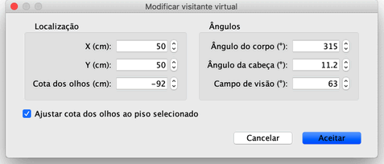
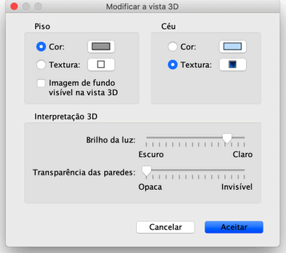

| Editar a vista 3D | |||
Escolha Vista 3D > Vista aérea ou Vista 3D > Visitante virtual para mudar entre dois pontos de vista propostos na vista 3D.
Quando a Vista aérea está seleccionada, a vista 3D mostra a sua casa de um ponto de vista elevado. Neste modo, mover
o rato para a esquerda ou para a direita com o botão esquerdo pressionado faz com que a casa rode em torno de um eixo vertical,
localizado no centro da casa; mover o rato para a frente e para trás com o botão esquerdo pressionado faz com que a
casa rode em torno de um eixo horizontal; usar a roda do rato aumenta ou reduz a ampliação na vista 3D. Quando o Visitante virtual está seleccionado, a vista 3D mostra a sua casa em três dimensões do ponto de vista de um visitante. Neste modo, mover o rato para os lados com o botão esquerdo pressionado faz com que o visitante se volte; mover o rato para frente e para trás faz com que a cabeça do visitante se levante ou baixe; usar a roda do rato faz com que o visitante se mova para a frente ou para trás. Em ambos os modos, as setas esquerda e direita do teclado têm o mesmo efeito da deslocação lateral do rato; as teclas Page up e Page down têm o mesmo efeito que mover o rato para a frente e para trás ; e as setas para cima e para baixo têm o mesmo efeito que a roda do rato. No modo Visitante virtual, pode também usar as teclas Home e End para levantar ou baixar o ponto de vista do visitante, assim como as teclas Alt + seta esquerda e Alt + seta direita para o mover para os lados.
Quando o Visitante virtual está seleccionado, um visitante virtual visto de cima é desenhado na planta da casa. A sua localização e o seu ângulo são actualizados em simultâneo na planta e na vista 3D, com cada movimento do visitante. Este visitante virtual está rodeado por quatro indicadores.
|


|
Quando o ponteiro do rato está em cima de um dos ombros do visitante ou nas suas costas, pode arrastar e largar esses pontos para
alterar o ângulo da cabeça, o ângulo do corpo ou a elevação do ponto de vista do visitante. Quando
pressiona o botão do rato, surge uma caixa com o valor editado.  Esta janela também lhe permite alterar o campo de visão do visitante virtual e definir se a elevação total do ponto de vista deve ser ajustada de acordo com o piso actualmente seleccionado, fazendo com que o visitante virtual suba ou desça para o nível seleccionado. Finalmente, escolhendo Vista 3D > Modificar a vista 3D..., abre a janela Vista 3D que lhe permite alterar a cor e/ou a textura do piso e do céu, o brilho da iluminação e a transparência das paredes (e do chão).  |
|